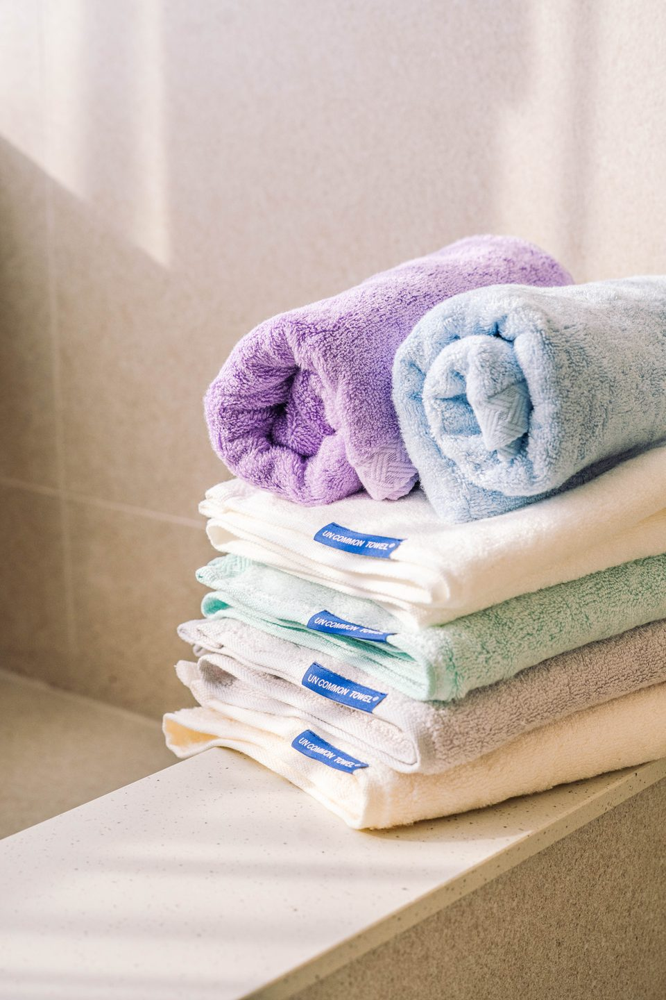
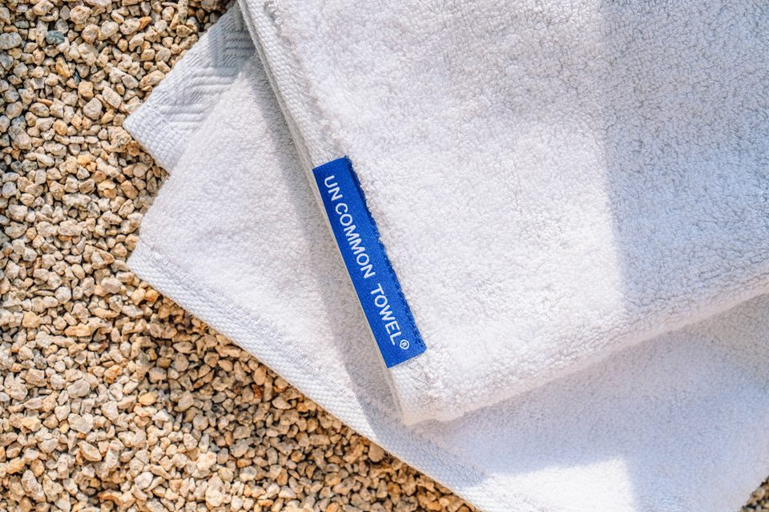
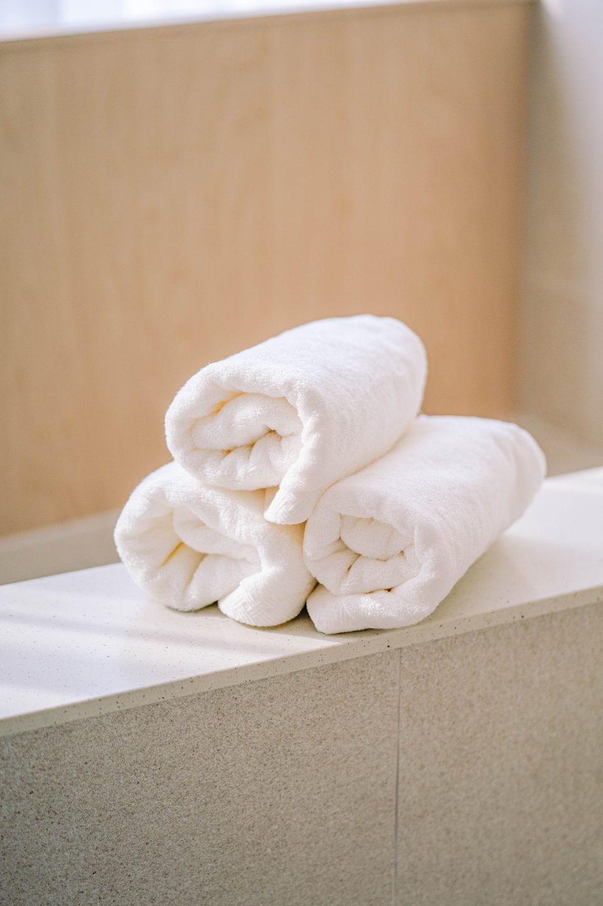
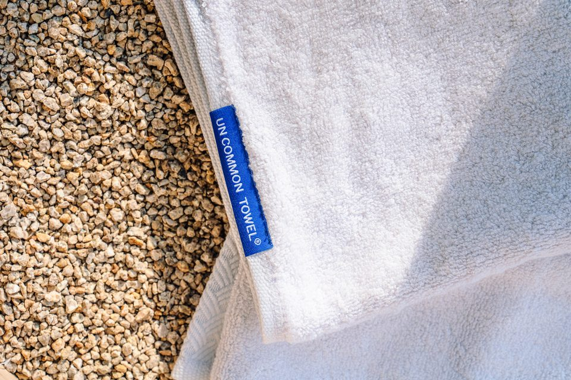

세안 끝, 매일 얼굴에 닿는 한 장을
도톰하고 부드럽게
대나무에서 온 실로 짠
프리미엄 페이스타월
DAILY · FACE TOWEL
세안 후 물기를 거두는 마지막 한 장.
하루에도 몇 번씩 얼굴에 닿는 수건을
40×80cm · 220g의 도톰한 밤부 한 장으로
밤부 비스코스(레이온) 100% · 40×80cm · 장당 220g
FITI시험연구원 · UNCOMMON TOWEL-THE SOFT 시료 기준
99.9% 감소
95.0% 감소
59mm 까지
불검출
[FITI시험연구원 · 2024.03~04] 항균성 KS K 0693:2022(황색포도상구균·폐렴균) · 흡수성 바이렉법 · 알러지성 염료 KS K 0736:2019 검출한계(20mg/kg) 미만
항균 결과는 항균 가공을 거친 시료의 결과이며, 반복 세탁 후 유지 여부는 확인되지 않았습니다.
처음 만든 수건은 소중한 사람과 소중한 날을 위한
'신부타올'이었습니다.
축복을 담는 물건이라 아무 실이나 쓸 수 없었죠.
그 마음 그대로 원사부터 직조, 염색, 라벨 마감까지
다시 살폈고, 이제 매일 얼굴에 닿는
페이스타월 한 장에 담았습니다.
언커먼 타올 대표
REAL REVIEWS
세수하고 얼굴에 대는 순간 감촉이 달라요. 몇 번 빨았는데도 처음 느낌 그대로예요
한 장 무게가 있어서 도톰한데, 물기는 한 번에 거둬져요. 욕실 수건을 다 이걸로 바꿨어요
색이 은은해서 욕실 선반에 쌓아두기만 해도 예뻐요. 가장자리 무늬가 고급스러워요
집들이 선물로 보냈는데 받은 친구가 어디 거냐고 다시 물어봤어요
※ 개인의 사용 경험이며, 사용 환경에 따라 다를 수 있습니다.

좋다는 수건을 사도
금방 거칠어지고 냄새가 나는
이유!
미국 애리조나대 Gerba 교수 연구에 따르면 가정 욕실 수건의 90%에서 대장균군이 검출됐어요. 사용 후 수분과 각질이 공급되면 하루 만에 세균 수가 크게 늘고, 이때 나오는 물질이 쉰내의 원인이 됩니다.
미생물이 자라려면 수분이 오래 머물러야 해요. 흡수만 좋고 잘 마르지 않는 수건은 젖어 있는 시간이 길어지고, 섬유 깊숙이 미생물막이 생기면 일반 세탁으로 잘 지워지지 않습니다.
섬유 촉감 평가(KES-FB) 연구에서 표면 마찰계수가 낮고 매끄러운 직물일수록 피부에 주는 물리적 자극이 적은 것으로 나타났어요. 세안 직후 얼굴은 매일 이 마찰을 만납니다.
※ 일반 미생물학·섬유공학 연구 결과이며 특정 제품의 효능이 아닙니다. (출처: Gerba 가정 위생 연구, 수건 건조와 바이오필름 연구, KES-FB 직물 촉감 연구)
매일 빨고, 젖고, 다시 마르는 수건은
소재와 짜임에 따라 쓰는 느낌이 달라집니다.
그래서 얼굴에 닿는 수건은 가격보다 먼저,
무엇으로 어떻게 만들었는지를 봐야 합니다.

밤부 비스코스(레이온) 100%
BAMBOO VISCOSE
대나무 펄프를 녹여 다시 뽑아낸 재생 셀룰로오스 섬유입니다.
매끄러운 실 표면 덕분에 손에 닿는 감촉이 부드럽고,
한 장 220g으로 짜 도톰하게 완성했습니다.
※ '천연 대나무'라는 이유만으로 천연 항균성을 주장하지 않습니다 · 항균은 별도 가공 결과입니다
매끄러운 실 표면
세안 후 한 번에
손에 쥐는 두께
시험 완료
수건의 감촉은 실에서 시작됩니다. 매끄러운 표면의 밤부 비스코스 원사를 골라, 닦는 순간의 촉감부터 설계했습니다.
같은 40×80cm라도 한 장의 무게는 제품마다 다릅니다. 표면 루프를 촘촘하게 세워 손에 쥐면 도톰한 220g으로 완성했습니다.
퓨어 화이트부터 아르테 민트까지, 욕실 선반에 쌓아두었을 때 편안한 색을 골랐습니다. 알러지성 염료 22종은 검출한계 미만으로 확인했습니다.
디자인으로 등록한 빗금문 가장자리, 비율을 맞춰 단 브랜드 라벨까지. 접어두었을 때도 보이는 곳을 마지막으로 다듬었습니다.
※ 공정 이해를 돕기 위한 설명이며, 단계별 사진은 실제 공정 사진으로 교체 예정입니다.
같은 페이스타월이 아닙니다. 표기부터 다릅니다
※ 특정 브랜드를 지칭하지 않으며, 시중 수건에서 흔히 볼 수 있는 표기 방식과의 비교입니다.
언커먼 타올은 단순한 면 수건이 아닌 실부터 라벨까지 설계한 한 장입니다. 마지막 디테일, 빗금문 가장자리가 언커먼의 얼굴이에요.
1st Detail
대나무 펄프에서 뽑은 밤부 비스코스 원사로, 매끄럽고 부드러운 첫 감촉을 만듭니다.
2nd Detail
촘촘하게 세운 표면 루프가 세안 후 물기를 거두고, 얼굴에 먼저 닿습니다.
3rd Detail
장당 220G 40×80cm 기준
같은 크기라도 무게는 다릅니다. 손에 쥐면 느껴지는 도톰한 두께로 짰습니다.
Border
디자인 등록 제30-1303321호 빗금문 가장자리. 접어두었을 때도 보이는 언커먼만의 무늬입니다.
Finish
기계 봉제로는 맞추기 어려운 비율로 단 라벨이 마감의 차이를 보여줍니다.
Uncommon, Finishing
원단에 항균 가공을 더하고 시험으로 확인했습니다. 황색포도상구균 99.9%, 폐렴균 95.0% 감소(KS K 0693).
※ 가공 결과이며 대나무 원료의 효과가 아닙니다
※ 무게·치수는 판매 제품 규격 기준이며, 항균 결과는 시험 시료 기준입니다.
무엇으로 만들었는지만큼,
매일 어떻게 느껴지는지도 중요합니다
ONE TOWEL · FIVE BENEFITS
밤부 비스코스
100%
40×80cm
장당 220g
황색포도상구균
99.9% 감소
욕실에 어울리는
4가지 컬러
디자인 등록
빗금문 가장자리
언커먼 타올이 지키는 풀 스펙
밤부 비스코스
100%
40×80cm
220g
4가지
컬러
FITI
시험 6건
디자인
등록

MATERIAL
대나무 펄프에서 얻은 재생 셀룰로오스 섬유입니다. '천연 대나무'라는 말 대신 무엇으로 만들었는지 그대로 적습니다.
소재 · 비스코스 레이온(대나무 유래) 100%*최종 표기는 제품 라벨 기준
SIZE · WEIGHT
세안 후 얼굴과 머리까지 닦기 넉넉한 크기. 지금 쓰는 수건 무게와 직접 비교해 보세요.
무게가 곧 품질이라는 뜻은 아닙니다. 손에 쥐었을 때의 도톰함을 가늠하는 기준입니다.
COLOR
쌓아두기만 해도 정돈되어 보이는 은은한 톤으로 골랐습니다.
TESTED
항균성 · 흡수속도 · 건조속도 · 세탁견뢰도 · 세탁 치수변화율 · 알러지성 염료. 시험한 조건과 함께 공개합니다.
시료명 UNCOMMON TOWEL-THE SOFT · 2024.03~04 시험
DESIGN
빗금문 가장자리는 디자인 등록 제30-1303321호, UNCOMMON TOWEL은 등록 상표입니다.
※ 디자인 등록은 형태에 관한 권리이며, 제품의 성능을 보증하지 않습니다.
세안 후 물기를 거두고, 빨아서 다시 쓰는 수건.
흡수와 세탁 후 변화까지
시험으로 확인했습니다.
세탁 후 색이 빠지는 정도를 보는 시험에서
1~5급 중 4~5급을
받았습니다
WATER ABSORPTION HEIGHT
최대 0mm
길이 방향
(mm)
너비 방향
(mm)
AFTER WASHING
시험 시료 1회 세탁 후 측정값
길이
폭
등급 (1~5급)
[FITI시험연구원 · 2024.03~04] 흡수성 바이렉법 · 세탁 치수변화율 · 세탁 견뢰도(3개 색상 시료)
시험한 시료의 결과이며, 세탁 조건·횟수에 따라 달라질 수 있습니다.
페이스타월은 매일 또는 이틀에 한 번
새 수건으로 바꿔 쓰시길 권합니다.
처음 한두 번은 다른 빨래와
나눠 세탁해 주세요.
30~40℃ 물에 중성세제로.
섬유유연제는 넣지 마세요.
사용 후·세탁 후 접어두지 말고
펴서 걸어 말려 주세요.
섬유유연제·표백제는 루프에 남아 흡수를 떨어뜨릴 수 있습니다. 건조기는 저온으로 짧게, 젖은 수건을 세탁 바구니에 오래 두지 마세요.
※ 세탁 가이드를 함께 보내드립니다. 제품 라벨의 취급 표시를 우선해 주세요.

※ FITI시험연구원 시험 성적서(2024.04 발급) 표지이며, 시험 시료 기준 결과입니다.
직물 · 빗금문 형태 · 제30-1303321호
※ 디자인 등록은 형태에 관한 권리이며, 제품의 성능을 보증하지 않습니다. 개인정보는 가렸습니다.
경찰청·법무부·대학·협회 등
여러 기관에 언커먼 수건을 납품해 왔습니다
* 납품 이력은 언커먼 수건 전체 기준이며, 이 페이스타월 제품에 한정되지 않습니다. 이미지는 상표등록증(제40-2382569호)입니다.
수건 한 장을 바꾼 사람들의 이야기
아침 세안 후 얼굴에 대는 순간이 기다려져요. 수건 하나 바꿨을 뿐인데 하루 시작이 달라졌어요
욕실 수건을 전부 같은 톤으로 맞췄더니 호텔 욕실 같다는 말을 들어요
부모님 댁에 보내드렸는데 부드럽다고 더 사달라고 하셨어요
소중한 날을 위해 만든 수건을, 매일의 자리로.
※ 개인의 사용 경험이며, 사용 환경에 따라 다를 수 있습니다.
FIRST ORDER GUARANTEE
여러 장을 한 번에 바꾸는 만큼 부담 없도록,
받으신 수건에 초기 불량이 있으면
배송비 없이 새 제품으로 교환해 드립니다.
* 제품 수령 후 7일 이내 신청 · 사용·세탁 전 제품 기준
· 단순 변심 반품은 하단 반품 안내를 따릅니다
세 가지 구성, 하나의 욕실. 필요한 장수를 선택하세요
첫 교체 · 페이스타월만 · 라이트
욕실 전체 교체 · 컬러 섞어 담기
넉넉한 교체 주기 · 선물용 · 최대 할인
| 구성 | 장수 | 공구가 | 장당 | 할인 |
|---|---|---|---|---|
| 베이직 | 8 | 102,000 | 12,750 | 25% |
| 패밀리 | 12 | 146,880 | 12,240 | 28% |
| 컴플리트 | 20 | 238,000 | 11,900 | 30% |
건조속도 시험을 진행했으며 결과는 확인되는 대로 안내드리겠습니다. 사용 후에는 접어두지 말고 펴서 걸어 주시면 더 빨리 마릅니다.
반복 세탁 후 항균 유지 여부는 현재 확보한 자료로 확인되지 않았습니다. 페이스타월은 매일 또는 이틀에 한 번 세탁해 쓰시길 권합니다.
첫 세탁은 단독 세탁을 권장합니다.
이번 공구 구성은 8장·12장·20장입니다. 컬러는 구성 안에서 나눠 담을 수 있습니다.
가족 모두 페이스타월로 쓰실 수 있습니다. 피부가 예민하다면 첫 세탁 후 사용해 주세요.
쇼핑백·박스 포함 여부는 구성별로 안내드립니다.
전자상거래법 필수 표기 (의류·섬유제품)
제품 소재비스코스 레이온(대나무 유래) 100%
색상퓨어 화이트 / 에그 아이보리 / 플린트 그레이 / 아르테 민트
치수40 × 80cm / 장당 220g
제조자(수입자)주문 페이지 판매자 정보 참조
제조국대한민국
세탁방법 및 취급 시 주의사항30~40℃ 중성세제 세탁, 유연제·표백제 사용 금지, 저온 건조
제조연월제품 라벨 별도 표기
품질보증기준제품 이상 시 공정거래위원회 고시 소비자분쟁해결기준에 의거 보상합니다.
A/S 책임자와 전화번호언커먼 고객센터
배송방법택배
배송비무료
주문 이후 예상 배송기간공구 마감 후 순차 발송
반품배송비단순 변심 시 구매자 부담
교환배송비단순 변심 시 구매자 부담
반품·교환 주소고객센터 접수 후 개별 안내
· 구매자 단순 변심: 상품 수령 후 7일 이내 (반품배송비 구매자 부담)
· 표시·광고와 상이하거나 계약 내용과 다르게 이행된 경우: 상품 수령 후 3개월 이내 또는 그 사실을 안 날부터 30일 이내 (반품배송비 판매자 부담)
· 반품 요청 기간 경과, 구매자 책임으로 상품이 멸실·훼손된 경우, 사용·세탁으로 상품 가치가 현저히 감소한 경우에는 반품·교환이 제한될 수 있습니다.
· 반품 시 먼저 판매자와 연락해 반품 사유·택배사·배송비·반품지 주소를 협의한 뒤 상품을 발송해 주세요.
· 소비자피해보상 및 분쟁 처리는 소비자분쟁해결기준(공정거래위원회 고시) 및 관계법령에 따릅니다.